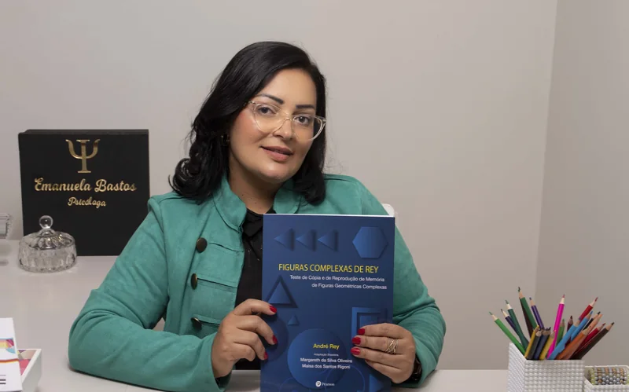

Ansiedade
Preocupação constante, corpo em alerta, dificuldade de desligar. Trabalhamos formas de reconhecer os gatilhos e recuperar o próprio ritmo.
Neuropsicologia
A terapia é um encontro reservado, no seu tempo, para olhar com calma para o que vem incomodando. Aqui você fala sem pressa e sem julgamento, e a gente organiza junto o que hoje parece confuso.
Atendimento on-line e presencial · Irecê e região, BA
50 min
É o tempo de cada sessão, no consultório ou por vídeo.
“Quem olha para fora, sonha. Quem olha para dentro, desperta.”
Áreas de atuação
Você não precisa chegar com o problema já nomeado. Se algo vem pesando, isso já basta para começarmos.
Preocupação constante, corpo em alerta, dificuldade de desligar. Trabalhamos formas de reconhecer os gatilhos e recuperar o próprio ritmo.
Falta de energia, desânimo, perda de interesse pelo que antes fazia sentido. Um espaço para entender esse estado e retomar o contato com a vida.
Conflitos que se repetem, dificuldade de colocar limites, distanciamento na família ou no casal. Olhamos juntos para os padrões que se formaram.
Exaustão que o fim de semana não resolve, irritação fácil, sensação de estar sempre devendo. Um lugar para revisar limites e prioridades.
Entender as próprias escolhas, reconhecer o que se repete e ganhar clareza para decidir — mesmo quando não há uma queixa específica.
Noites em claro, pensamento acelerado na hora de dormir, cansaço que se acumula. Investigamos o que sustenta esse ciclo no dia a dia.
Sobre mim
Sou neuropsicóloga, inscrita no CRP 03/11614, e atendo adolescentes, adultos e idosos em Irecê e região, na Bahia — de forma presencial e também por vídeo.
Meu trabalho começa pela escuta. Antes de qualquer proposta, eu preciso entender a sua história, o seu contexto e o que te trouxe até aqui. A partir daí, construímos juntos um caminho de acompanhamento, com objetivos combinados e revisados ao longo do processo.
Além do acompanhamento clínico, também realizo avaliação neuropsicológica, com instrumentos aplicados de acordo com a idade e a demanda de cada pessoa.
Como funciona
O atendimento acontece presencialmente, no consultório, ou on-line por vídeo — você escolhe o formato que couber melhor na sua rotina.
Me mande uma mensagem contando, em poucas linhas, o que te levou a procurar terapia. Respondo pessoalmente e tiro as dúvidas iniciais.
Combinamos o dia, o horário e o formato — presencial ou on-line. Você recebe a confirmação com todas as orientações antes do encontro.
A sessão dura cerca de 50 minutos e acontece de forma tranquila, no consultório ou on-line. Não é preciso preparar nada — só chegar.
A sessão por vídeo acontece pelo próprio WhatsApp, em videochamada, com a mesma duração e o mesmo sigilo da sessão presencial. Escolha abaixo e já me diga na mensagem — assim eu reservo o horário no formato certo.
As videochamadas do WhatsApp são criptografadas de ponta a ponta e nenhuma sessão é gravada. Para o atendimento on-line, escolha um lugar reservado e use fone de ouvido.
Dúvidas frequentes
O atendimento é particular. Ao final de cada sessão eu emito recibo, e você pode usá-lo para solicitar reembolso ao seu plano de saúde, quando houver essa previsão no contrato. Se a operadora pedir algum documento adicional, é só me avisar que eu providencio.
Cada sessão dura cerca de 50 minutos. A frequência mais comum é semanal, mas isso é definido junto com você, considerando a sua demanda e a sua rotina.
É um encontro de acolhimento. Você conta o que está acontecendo, no seu tempo, e eu escuto. Também explico como conduzo o trabalho, esclareço as combinações sobre sigilo, horários e valores, e respondo às suas dúvidas. Não é preciso preparar nada nem chegar com tudo organizado na cabeça.
Blog
Três frentes do meu trabalho, explicadas sem jargão. Conteúdo informativo: não substitui consulta nem serve para autodiagnóstico — é material para você chegar mais informada ou informado à conversa.
Ela não mede inteligência nem entrega um rótulo. O que os testes investigam de fato e o que você recebe no final do processo.
Muita gente chega ao consultório achando que a avaliação neuropsicológica é um teste de inteligência. Não é. Ela também não é um exame que aponta um diagnóstico sozinha, nem uma prova que se passa ou se reprova.
A avaliação é um processo estruturado que descreve como a pessoa funciona em diferentes áreas do pensamento e do comportamento: o que ela sustenta com facilidade, onde precisa de mais esforço e quais estratégias já usa para se virar no dia a dia.
Cada bateria é montada de acordo com a idade e com a queixa. De modo geral, os instrumentos olham para:
Começa por uma entrevista longa, que reconstrói a história de desenvolvimento, de saúde e de escola. Depois vêm as sessões de testagem, normalmente de três a seis encontros curtos. Por fim, o material é corrigido, analisado e transformado em um laudo.
A devolutiva é a parte que mais importa: é quando os resultados são explicados em linguagem clara, junto com orientações práticas para casa, para a escola e para os profissionais que acompanham o caso.
A avaliação não substitui a consulta médica e não fecha sozinha diagnósticos que são de competência médica. Ela contribui com dados objetivos que ajudam a equipe a decidir — e ajuda a família a entender o que está acontecendo.
Também não é um retrato definitivo. Ela descreve um momento. Sono ruim, um período de luto ou uma medicação recente influenciam o desempenho, e isso entra na leitura dos resultados.

ReabilitaçãoO laudo não é o fim do caminho. Como se treina atenção, memória e organização — e o que é razoável esperar disso.
Terminada a avaliação, a pergunta que sempre vem é: “e agora?” A reabilitação neuropsicológica é a resposta prática a essa pergunta. Ela pega o perfil descrito no laudo e transforma em um plano de treino.
Não é passar tempo em joguinhos de cérebro. É um acompanhamento estruturado, com metas combinadas, tarefas que aumentam de dificuldade aos poucos e — a parte mais importante — transferência para a vida real. Melhorar em um exercício de papel só interessa se melhorar também na cozinha, na sala de aula ou no trabalho.
Restaurar é treinar diretamente a função enfraquecida, com exercícios repetidos e graduados. Compensar é criar apoios externos que contornam a dificuldade: agenda, alarme, lista fixa, roteiro escrito, lugar certo para cada objeto.
As duas caminham juntas. Insistir só na primeira frustra; usar só a segunda deixa capacidade na mesa. O equilíbrio entre elas depende do caso, da idade e do tempo desde o evento.
A reabilitação não promete devolver o cérebro ao estado anterior. O objetivo é funcional: fazer a pessoa dar conta da própria rotina com mais independência e menos desgaste.
Progresso costuma ser lento e desigual — semanas boas, semanas paradas. Por isso reavaliamos periodicamente e ajustamos o plano. E o envolvimento da família e da escola faz muita diferença: o que se treina na sessão precisa ser sustentado fora dela.
Quatro achados sólidos sobre aprendizagem, três mitos que ainda circulam nas escolas — e o que fazer com isso em casa.
Neuroeducação é a ponte entre o que a neurociência descobriu sobre aprendizagem e o que acontece de fato na sala de aula e na mesa de estudo de casa. Não é um método nem uma receita — é um conjunto de princípios que ajuda a parar de gastar energia com o que não funciona.
Divida o estudo em blocos curtos com pausa de verdade entre eles. Peça à criança que explique o conteúdo em voz alta sem olhar o material. Retome no dia seguinte o que foi visto hoje, mesmo que por cinco minutos. E proteja o horário de dormir como se fosse matéria de escola — porque, na prática, é.
Quando a dificuldade persiste apesar de tudo isso, vale investigar. Nem todo obstáculo de aprendizagem se resolve com método de estudo, e é exatamente aí que a avaliação neuropsicológica ajuda.
Ficou com dúvida sobre algum desses assuntos? Me pergunte pelo WhatsApp.
Se você chegou até aqui, talvez seja um bom momento para conversar. Me mande uma mensagem quando se sentir pronta ou pronto.
Agendar pelo WhatsApp